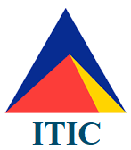

Education across the world has undergone a critical transformation in last decades. The academic world is becoming more convenient and personalized, and educational materials are becoming accessible to all through smart devices and computers. Today, the advancement in Artificial Intelligence (AI), Data Science, Machine Learning, Natural Language Processing (NLP), Knowledge Representation, Software-as-a-Service and more, has the potential to transform the Education ecosystem in fundamental ways.
AI can facilitate administrative tasks, provide smart content, enable personalized and global learning, and more importantly enable a productive teaching and learning processes. The core of the idea for AI-enabled Education Stream is to advance the scientific understanding of Intelligence-led and AI-enabled teaching and learning and to identify novel applications of AI and Data Science (from process automation, to cognitive assistants and smart schools) in education.
|  | Research Grant: "Intelligence-led Teaching and Learning"; Linkage: ITIC Training and Resourcing and Macquarie University, 2019-2023. |
Copyright © AIP Research Center 2019